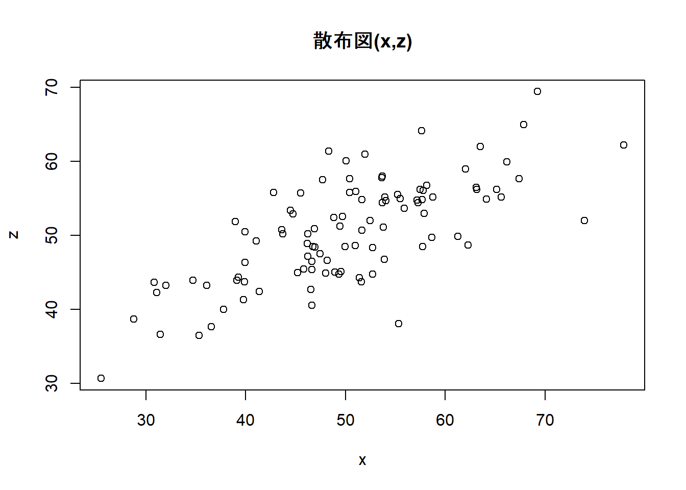
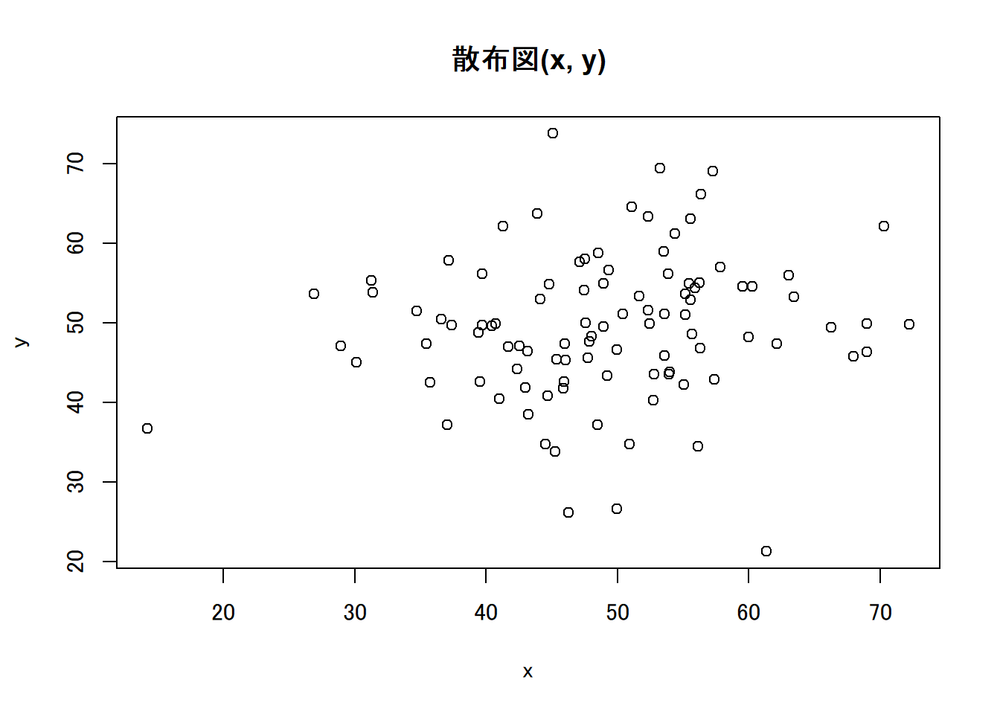

Week2 | Rによる自主勉強会
伊﨑 直志
2023年10月13日
準備
Loading Packages
library(tidyverse)
library(gridExtra)##
## 次のパッケージを付け加えます: 'gridExtra'## 以下のオブジェクトは 'package:dplyr' からマスクされています:
##
## combinewindowsFonts(family_sans = windowsFont("Noto Sans JP"))
par(family="family_sans")
knitr::opts_chunk$set(echo = TRUE)第１章 回帰分析の目的
1.1. 相関と因果
相関関係 correlation：「Xが変化すればYも変化する」
因果関係 causality：「Xを変化させればYも変化する」
疑似相関 spurious correlation
「変数XとYに共通の第3の要因Zが存在することによってXとYに生じる見せかけの相関関係」
e.g. 個人所得の増加→タバコへの支出増加、医療・健康への支出増加 ＝タバコと健康の疑似相関
- 時間的先行性: 原因となる現象が結果となる現象に時間的に先立って起きている。
- 共変関係（相関関係）: 原因となる現象が変動すると、結果となる現象も変動する。
- 他条件の同一性: 原因となる現象の双方に与える現象は存在しないか、その影響は統制されている。
1.2. 回帰と予測
一次関数 \(y=a+bx\) の形で表現 →最小二乗法（least squares estimation）（図1.1 →図1.6）
回帰直線、回帰式、回帰係数
回帰式の一方の変数に代入してもう一方の変数の値を計算、予測
＝ある変数Xの値をもとにして、他の変数Yの値を予測 ＝回帰分析
X：説明変数、Y：被説明変数
⇒因果解釈ではなく、あくまで予測解釈！
回帰分析 →Xが与えられた時のYの値の予測
1.3. 自然科学のデータと社会科学のデータ
実験の難しさ（費用等コスト、倫理）
⇔自然科学：変数選択の制約・影響少、実験室実験可（変数統制） [従来的説明]
→現在、社会科学における実験多数：実験経済学等 or 自然実験…（後述）
第２章 統計の基礎知識
2.1. 母集団と標本
-（有限集団全体）母集団－（抽出）標本 - （確率分布）母集団－（観測値）標本 （←本書）
正規分布 normal distribution
正規分布\(N(平均, 分散=標準偏差^2)\)
正規分布（乱数）: rnorm(個数, 平均, 標準偏差)
rnorm(100, 50, 10) ## [1] 44.64207 53.68809 61.42688 66.64423 50.58869 43.46551 47.67272 44.83153
## [9] 39.24324 45.03417 57.86738 68.03069 67.05411 61.08403 64.63821 63.04392
## [17] 36.58506 59.91890 55.53469 47.66382 67.18255 60.09634 46.78657 43.75594
## [25] 62.97543 54.54121 59.33315 52.21242 39.94296 41.56147 60.03191 64.06589
## [33] 32.01813 43.79266 43.61537 53.53373 59.46366 43.63221 66.25925 49.57721
## [41] 48.49997 51.08470 50.92236 50.58616 59.62128 48.29594 63.50102 27.65896
## [49] 54.25686 44.64534 54.52330 56.88285 46.95374 56.81946 39.47281 50.46765
## [57] 63.68552 55.79863 54.12161 51.55296 39.98531 57.32366 69.47814 42.16641
## [65] 44.44610 29.49835 38.80400 47.89655 47.66432 47.90364 36.63066 49.04383
## [73] 58.15844 58.47674 38.94095 37.62409 53.51494 38.51321 56.62900 56.48505
## [81] 50.88144 55.96297 47.07027 45.63343 39.08799 49.86213 41.82002 59.88727
## [89] 40.19606 39.65743 63.20288 54.50178 44.34930 57.06573 43.27730 69.32198
## [97] 52.17018 45.12434 53.24191 43.15914curve(dnorm(x, 50, 10), 0, 100) #正規分布のグラフ描画
pnorm(60, 50, 10) #大きさ１の標本の値が60より小さくなる確率## [1] 0.8413447| 命令 | 説明 | （英略） |
|---|---|---|
rnorm(n, a, b) |
平均a, 標準偏差bの正規分布乱数をn個発生させる。 | random+norm |
dnorm(x, a, b) |
平均a, 標準偏差bの正規分布について, 密度関数の点xにおける値を計算する。 | density+norm |
pnorm(x, a, b) |
平均a, 標準偏差bの正規分布について, 分布関数の点xにおける値を計算する。 | probability+norm |
正規分布グラフ 描画関数
curve(dnorm(x, a, b), min, max) #curve(関数の式,
横軸の最小値, 横軸の最大値)
2.2. 無作為抽出
母集団から標本を抽出（random sampling）
rnorm(100, 50, 10)## [1] 39.84992 42.63972 38.94411 47.64863 49.78846 51.48251 44.19075 49.56047
## [9] 46.41939 43.37637 53.57793 50.46812 38.96699 54.60883 62.58858 56.53555
## [17] 48.54448 49.98766 53.56447 43.75189 56.58922 53.53618 45.09990 40.45425
## [25] 41.85142 53.37784 39.76421 28.06386 46.76633 51.16149 53.71016 74.86061
## [33] 33.01028 39.85122 31.66987 53.38498 31.75037 49.99543 48.89634 56.62849
## [41] 43.54490 44.86819 53.43327 50.44191 56.43872 45.97254 50.72774 45.94063
## [49] 43.72473 43.29311 53.12064 58.41872 28.40548 63.12236 49.97392 47.96514
## [57] 43.99857 54.92868 58.71941 52.58946 54.70641 42.83865 43.54547 40.85296
## [65] 55.23976 61.28604 37.81425 45.57718 47.80180 58.70824 40.72753 66.31897
## [73] 52.64226 66.13862 50.90880 56.13451 44.31811 59.64174 48.98336 53.33795
## [81] 36.09484 46.38287 42.05003 37.23264 53.88636 35.39206 46.89005 47.63555
## [89] 32.44479 35.75277 41.78276 58.51850 29.94724 39.34512 53.11984 58.85341
## [97] 47.24495 47.42360 56.21173 37.87029Z <- rnorm(100, 50, 10)
Z## [1] 57.14888 29.44618 54.25696 42.43169 68.46912 41.54101 47.55851 30.03749
## [9] 32.08191 53.00375 51.52229 40.28184 36.72630 43.23846 53.61088 37.22567
## [17] 57.26898 61.75747 50.00335 31.98641 49.37056 54.32688 65.11238 70.41543
## [25] 49.16592 62.52706 45.11723 36.44298 35.65295 45.77445 50.00480 51.24271
## [33] 39.73556 42.33855 24.93176 41.16645 64.80684 41.41844 63.10796 56.89745
## [41] 49.91417 51.91948 41.10083 57.44866 59.18399 52.20577 53.70382 47.36585
## [49] 59.22634 62.97470 39.23798 47.98187 72.31693 55.82106 74.02099 44.27083
## [57] 44.37956 63.87898 59.19729 48.94819 38.58025 55.47357 51.26391 47.33183
## [65] 42.59660 53.89248 49.33754 37.61573 55.69761 48.07026 57.87484 41.52815
## [73] 30.80206 50.61334 55.74431 55.32302 44.31337 53.83620 54.52025 76.71369
## [81] 51.39550 51.59648 46.36746 61.15313 45.63536 26.83319 53.75853 53.47762
## [89] 41.64152 33.78888 48.43283 47.66028 37.00977 45.21716 64.91966 61.85338
## [97] 31.68623 51.23963 52.37466 48.02546hist(Z) #ヒストグラム
Z[1:10] #最初の10個のデータを抜き出し## [1] 57.14888 29.44618 54.25696 42.43169 68.46912 41.54101 47.55851 30.03749
## [9] 32.08191 53.00375a <- c(5, 10, 100)
Z[a] #5番目,10番目,100番目の位置にある数字を抜き出し## [1] 68.46912 53.00375 48.02546Z[c(5, 10, 100)] #aを使わずに同上の操作## [1] 68.46912 53.00375 48.02546#特定の意味を持つ数値を抽出
max(Z) #最大値## [1] 76.71369which.max(Z) #最大値の位置## [1] 80min(Z) #最小値## [1] 24.93176which.min(Z) #最小値の位置## [1] 35mean(Z) #平均値## [1] 49.49446summary(Z) #基本統計量を一括表示## Min. 1st Qu. Median Mean 3rd Qu. Max.
## 24.93 42.16 49.96 49.49 55.71 76.711:10## [1] 1 2 3 4 5 6 7 8 9 10sample(1:10, 3) #無作為抽出、sample(範囲, 抽出個数)## [1] 2 8 9sample(Z, 5) #sample(標本, 抽出個数)## [1] 59.18399 44.27083 46.36746 47.66028 36.44298sample(Z, 5) #sample(標本, 抽出個数)## [1] 42.59660 30.03749 63.87898 61.85338 47.66028fruits <- c("ミカン", "バナナ", "リンゴ", "レモン", "モモ")
fruits## [1] "ミカン" "バナナ" "リンゴ" "レモン" "モモ"sample(fruits, 1) #fruitsから1個抽出## [1] "バナナ"sample(fruits, 2) #fruitsから2個抽出## [1] "リンゴ" "ミカン"sample(fruits, 1) #fruitsから1個抽出## [1] "バナナ"sample(fruits, 1) #fruitsから1個抽出## [1] "バナナ"コイン投げ1
coin <- c("Head", "Tail")
#sample(coin, 5) #うまくいかない ∵非復元抽出になっている
sample(coin, 5, replace = TRUE) #復元抽出, replace=TRUE## [1] "Tail" "Tail" "Head" "Tail" "Head"2.3. 平均と大数の法則
- ①ベクトルrecのi番目の場所rec[i]に
- ②母集団N(50,10^2)から抜き出した大きさ100の標本の平均を格納する
mean(Z) #標本平均## [1] 49.49446mean(rnorm(100, 50, 10))## [1] 49.67168mean(rnorm(100, 50, 10)) #Z<-rnorm(100,50,10)## [1] 50.39189#より多い試行、抽出1000回、標本の大きさ100
S <- 1000
rec1 <- numeric(S)
for(i in 1:S){rec1[i]<-mean(rnorm(100, 50, 10))}
rec1## [1] 49.78569 49.87589 51.35574 48.82469 49.21558 49.54709 48.59791 49.80149
## [9] 48.04752 48.89701 50.31340 49.14652 50.81077 47.85325 48.91599 51.02525
## [17] 50.56729 50.69176 51.28938 50.43238 50.69367 49.04426 49.61710 49.71424
## [25] 49.26555 53.06911 50.52613 51.35361 49.59581 50.17367 50.62698 50.36470
## [33] 47.77869 48.76197 50.86274 50.25597 51.08254 49.37060 50.66637 49.48307
## [41] 49.05757 49.23285 48.70400 48.10200 51.39677 49.41528 49.09813 51.10866
## [49] 49.68472 49.76194 49.22113 49.13442 50.07379 51.04238 50.83826 51.06898
## [57] 49.59840 49.81853 50.16410 49.58478 50.09849 51.39682 50.45307 51.11653
## [65] 51.26975 49.03210 50.40041 48.20937 50.38774 50.62275 49.34883 50.53813
## [73] 50.65930 50.16331 52.03601 50.72686 51.28907 48.87923 49.32554 50.83737
## [81] 48.49217 50.43334 50.70168 49.88034 51.47456 49.68516 51.78878 51.47739
## [89] 50.57566 50.20011 48.98932 50.19523 48.46186 50.39251 48.43159 49.36634
## [97] 51.10690 48.95823 48.65433 50.11112 51.15505 50.98535 50.08040 50.47221
## [105] 49.48936 49.59043 48.87006 50.59352 50.25485 50.88921 49.47936 51.13775
## [113] 48.54016 48.80321 50.41438 51.12037 51.09987 50.77808 50.71838 51.87203
## [121] 48.01377 50.44595 50.90433 47.42891 49.95242 48.12650 50.45692 50.61109
## [129] 51.08400 51.38453 49.37953 50.27018 49.81391 50.73629 50.38604 49.19450
## [137] 49.00720 48.21390 51.47887 50.34903 50.18754 50.36707 51.44045 50.20447
## [145] 49.33138 49.75954 49.12441 49.21622 49.69960 49.84061 48.93159 49.94209
## [153] 50.77971 49.81905 49.66035 49.04216 48.79314 50.35237 50.19718 49.57827
## [161] 49.31505 50.51455 50.87555 50.02838 51.01814 51.34271 50.49779 49.99673
## [169] 51.08637 49.36676 48.79110 53.03935 50.67312 49.78662 49.73170 50.81774
## [177] 50.19071 50.87127 48.91843 50.36378 49.13068 49.17880 49.58621 51.24493
## [185] 49.26404 50.05904 48.80092 49.09789 47.45014 51.06676 47.85670 50.49110
## [193] 49.37671 49.60097 51.20453 50.06234 51.03989 51.33001 50.52018 50.64064
## [201] 49.51459 48.32847 49.06843 49.92415 48.16117 49.86230 51.70724 50.74248
## [209] 49.05475 49.26092 50.34909 50.26128 51.14054 48.79432 50.44663 50.91315
## [217] 47.93969 51.62136 50.37948 49.46460 50.89583 52.33804 48.79355 50.39797
## [225] 49.64314 48.67464 48.67409 50.09287 48.87238 50.06335 50.97945 51.21926
## [233] 51.19705 50.50469 49.34959 50.21057 50.52399 48.97229 49.35389 49.03872
## [241] 49.65428 48.70722 48.64389 48.66384 51.22272 50.69275 47.94321 50.45655
## [249] 49.59632 50.18147 50.42461 51.02218 49.51323 50.64754 53.18565 49.65015
## [257] 49.79392 49.86185 50.52174 48.94321 50.79066 49.28091 49.91521 49.58856
## [265] 47.68291 49.26127 51.06447 49.95824 48.96178 49.81915 48.39323 48.49954
## [273] 49.30684 50.09767 49.56553 48.60101 47.83152 50.72285 49.92515 50.00487
## [281] 50.33019 50.23775 50.64191 50.80234 50.20230 50.01827 49.87579 51.32357
## [289] 50.45351 50.76789 50.69232 46.82209 51.03652 48.82898 49.14165 51.58851
## [297] 50.22766 50.69674 49.95665 49.46730 50.53799 50.71478 49.48309 50.86060
## [305] 50.93014 50.25162 50.70692 50.61681 50.46334 48.49643 49.08921 49.74256
## [313] 50.08671 50.97841 48.72180 50.56658 49.87742 49.48100 49.87549 49.92291
## [321] 49.18860 51.85566 49.45987 50.74387 51.08584 49.52293 48.28163 49.75490
## [329] 49.94420 51.76021 49.69368 49.84720 49.54838 49.97057 47.48324 51.49250
## [337] 49.81621 49.37506 50.31038 50.18529 48.92918 51.40958 50.25348 50.46664
## [345] 49.90167 51.77824 50.07846 51.24594 50.00292 49.75894 50.38610 51.38771
## [353] 49.37904 49.36642 48.55506 49.25310 51.01682 46.14543 51.22593 49.37882
## [361] 49.85713 49.53781 48.05943 50.92102 50.46971 51.68431 48.73849 49.78344
## [369] 51.11500 50.93480 49.26209 48.74244 50.60261 51.62889 51.51503 49.95412
## [377] 49.45119 50.69082 49.83932 51.12172 49.95403 48.95038 50.46323 49.30935
## [385] 47.89444 50.23680 50.46715 50.52333 48.64834 48.82324 48.21774 49.58312
## [393] 47.84741 47.69522 50.50251 49.73584 49.85532 49.64595 50.54308 50.18663
## [401] 50.84764 49.25382 49.55093 49.19673 49.26804 48.64352 49.31592 48.85171
## [409] 47.53274 50.79368 49.68699 50.72072 49.62666 48.90207 48.76867 50.23524
## [417] 50.70299 48.46628 47.56074 49.22945 49.19912 50.47651 49.05500 50.64740
## [425] 48.88678 51.00999 51.09215 49.86966 52.21344 51.44421 50.33165 49.53655
## [433] 50.51670 49.65985 48.78793 51.66711 49.90078 49.42182 48.90264 48.21374
## [441] 51.17700 51.54309 50.30277 48.86441 50.29334 49.85587 49.58329 49.18052
## [449] 49.77596 48.96812 47.98342 49.54112 51.92687 51.94585 49.87211 49.01982
## [457] 49.66786 50.23607 49.63732 50.17905 48.28636 51.11186 49.62898 50.92349
## [465] 51.85733 50.00516 49.64275 49.15421 48.92785 50.16683 48.14034 51.78738
## [473] 49.44590 51.00033 49.11279 50.68012 49.87328 49.39428 49.51185 49.76016
## [481] 49.71163 51.33524 49.93334 50.14611 50.96642 49.03436 49.11675 49.25481
## [489] 50.70388 49.01579 49.72469 49.57844 50.65299 50.01534 50.87908 48.85571
## [497] 50.02046 48.57833 50.63821 50.77955 51.19208 49.04824 49.61482 50.22501
## [505] 49.31850 50.14176 48.66075 50.93888 50.69659 51.25726 48.60743 50.66131
## [513] 50.19352 50.42270 51.42119 50.93776 49.13277 50.75381 53.28493 50.02127
## [521] 49.96548 49.14764 51.46322 47.97494 47.39308 51.22382 51.00728 49.71981
## [529] 48.52108 50.23029 49.49093 47.97940 51.34783 48.66344 50.08451 51.01154
## [537] 50.27923 50.79158 49.90947 48.41391 48.77480 48.56094 51.77919 49.19376
## [545] 51.55995 48.73378 49.76261 50.53496 50.64977 49.68329 50.72706 48.57596
## [553] 51.24751 50.14243 50.79031 50.50816 48.78997 50.74450 48.44388 51.06202
## [561] 50.99242 48.87740 52.47337 50.18514 51.14792 49.90691 48.83127 51.43343
## [569] 49.57123 48.61460 49.91659 50.53997 48.76328 49.76985 48.66669 49.34352
## [577] 48.86767 51.09978 52.34081 49.93707 51.09628 50.98977 50.37784 48.78526
## [585] 48.93147 48.94199 50.30361 50.00055 49.50801 51.40590 51.15861 50.77379
## [593] 51.17149 48.88648 49.78530 50.26835 49.50285 51.19707 50.09034 49.30708
## [601] 49.11930 51.04880 51.81557 49.77612 47.73713 50.67024 49.05431 49.40857
## [609] 48.82801 50.00353 50.74001 50.60898 49.60404 49.57654 48.32576 51.15506
## [617] 50.06223 49.62892 51.18071 51.69775 50.83436 50.62272 49.67973 49.02221
## [625] 49.43320 50.83191 48.76113 49.63151 49.89690 49.43289 50.58842 48.22085
## [633] 50.42218 48.46118 49.92989 48.99780 48.73681 50.15754 50.24658 48.92419
## [641] 50.01472 50.40089 49.52838 49.92574 48.98461 50.86670 49.27824 50.01213
## [649] 49.22368 50.70141 49.40796 47.69270 50.80829 51.14570 50.18042 47.67456
## [657] 50.80736 51.03392 51.46903 50.88102 48.67358 50.05426 48.86451 49.53353
## [665] 49.78449 50.98418 49.36756 48.77464 49.77787 48.50572 51.10086 49.65829
## [673] 49.90652 51.38435 49.01936 51.14194 51.14496 50.49142 50.03173 50.70741
## [681] 49.20767 50.63324 49.91328 50.98479 50.25630 50.34021 50.42521 50.49080
## [689] 49.74756 48.19646 49.13833 51.14949 49.51794 51.16102 51.33899 50.06428
## [697] 49.19071 49.01159 49.24820 47.35627 49.06738 51.00711 51.23908 49.29872
## [705] 49.57518 51.48496 51.38915 50.57739 51.74711 48.38219 50.95067 51.07237
## [713] 50.96358 50.55169 49.30013 51.94175 49.02631 49.59958 50.35908 50.49825
## [721] 50.15871 49.10031 50.40178 50.17365 50.25360 50.65997 50.77256 50.15826
## [729] 48.66637 49.04957 50.51142 50.44844 49.55581 50.81453 49.12151 50.54036
## [737] 49.34242 49.98580 49.85269 50.47438 50.07563 50.07715 47.90652 48.67737
## [745] 49.04254 48.72083 50.90824 50.52981 50.14886 49.69323 51.40294 50.01765
## [753] 50.72662 50.14058 49.71823 50.32370 50.65175 50.50471 49.26489 51.34471
## [761] 50.69680 48.73170 48.97539 47.28151 50.42250 51.59844 49.40712 48.33590
## [769] 50.14172 50.99716 48.66418 49.20866 51.60191 51.30794 49.67707 50.58519
## [777] 49.20258 50.62907 50.37113 50.00670 50.39325 48.71476 50.32257 50.30718
## [785] 50.09559 51.66719 50.22201 50.78462 50.55790 49.32066 49.26732 50.22921
## [793] 49.02767 49.87187 49.57231 50.01145 50.97744 49.48900 49.79960 50.39876
## [801] 49.99488 48.79354 50.40530 49.27509 48.86355 49.59509 47.93021 50.68613
## [809] 50.98943 52.50146 52.88212 51.55535 50.16231 49.96811 50.86727 50.71528
## [817] 49.24013 49.23683 50.54488 50.31171 51.69906 51.25926 49.90102 50.82489
## [825] 48.71439 50.46242 50.27478 49.67364 49.01297 49.13209 51.49919 48.23277
## [833] 50.02783 50.37853 50.05905 50.01650 51.55430 49.41584 52.74172 51.33887
## [841] 50.97957 49.38614 50.19330 49.49527 50.17749 50.22764 51.22604 49.27137
## [849] 51.18968 49.68422 51.35706 48.71086 50.60289 51.50325 49.46384 49.31813
## [857] 49.26443 51.46423 48.94259 50.31682 51.25934 49.52518 51.63486 48.47809
## [865] 51.55168 50.51419 50.29513 48.78982 49.43653 49.78247 50.84916 51.09419
## [873] 51.08161 50.30674 51.49627 49.62679 49.12300 50.20538 51.25380 49.41852
## [881] 49.58214 52.47483 49.98508 49.40813 50.61413 49.15346 51.15497 50.10698
## [889] 49.82564 50.15669 49.83889 50.38816 50.24760 50.50872 48.10380 48.74491
## [897] 49.46806 50.78605 49.63030 50.88068 51.19726 50.50325 50.09955 51.12649
## [905] 48.86169 50.12970 51.63833 50.90887 49.54002 48.99138 49.84360 51.09265
## [913] 48.88871 51.64521 50.53077 49.91718 49.34847 49.57152 51.16432 50.09235
## [921] 49.77060 49.56483 50.29958 50.06140 49.60884 48.84071 50.50942 52.12895
## [929] 50.09069 48.56772 50.55665 50.15729 50.04728 50.15596 50.95992 50.19991
## [937] 50.50781 51.54732 49.34576 47.93090 50.00929 47.45509 50.37549 51.06074
## [945] 49.51759 49.89170 50.99111 51.09209 48.11600 50.96566 50.10365 50.54976
## [953] 50.16632 48.78205 49.86205 48.77444 49.24549 51.18028 50.03159 49.41095
## [961] 49.25456 50.22994 48.94637 49.61740 50.36263 49.95873 49.70476 50.21533
## [969] 50.15588 50.32310 49.26826 52.46842 49.39754 49.47187 48.85472 49.28427
## [977] 50.23074 50.36677 50.30037 50.56281 47.72726 49.31787 51.62177 50.91386
## [985] 50.40943 50.52500 49.55581 50.25938 50.10299 48.77550 50.60142 50.12620
## [993] 47.53446 50.17002 50.10221 48.89560 49.58135 50.88962 48.70836 50.27648hist(rec1, main = "n = 100") #main = "n = 100", ラベル
summary(rec1)## Min. 1st Qu. Median Mean 3rd Qu. Max.
## 46.15 49.27 50.03 49.99 50.70 53.28【大数の法則】 母集団から無作為に抜き出された標本の平均値は、標本の大きさが大きいほど、母集団平均に近い値をとる。
サイコロ：母集団平均3.5
\(1*1/6+2*1/6+3*1/6+4*1/6+5*1/6+6*1/6=3.5\)
⇒大数の法則をスクリプトで確認
sample(1:6, 10, replace = TRUE) #サイコロを10回振る試行## [1] 2 6 3 3 4 6 4 3 2 5mean(sample(1:6, 1000, replace = TRUE)) #サイコロを1000回振った結果の目の平均値, 3.5に近似## [1] 3.402#サイコロ10回の標本平均×1000
S <- 1000
rec2 <- numeric(S)
for(i in 1:S){rec2[i] <- mean(sample(1:6, 10, replace = TRUE))} #サイコロ10回の標本平均×1000
summary(rec2)## Min. 1st Qu. Median Mean 3rd Qu. Max.
## 1.900 3.100 3.500 3.491 3.900 5.200#サイコロ1000回の標本平均×1000
S <- 1000
rec3 <- numeric(S)
for(i in 1:S){rec3[i]<-mean(sample(1:6, 1000,replace=TRUE))} #サイコロ1000回の標本平均×1000
summary(rec3)## Min. 1st Qu. Median Mean 3rd Qu. Max.
## 3.336 3.461 3.498 3.497 3.531 3.673#サイコロ10000回の標本平均×1000
S <- 1000
rec4 <- numeric(S)
for(i in 1:S){rec4[i] <- mean(sample(1:6, 10000, replace = TRUE))} #サイコロ1000回の標本平均×10000
summary(rec4)## Min. 1st Qu. Median Mean 3rd Qu. Max.
## 3.438 3.489 3.501 3.501 3.512 3.5502.4. 分散と標準偏差
var() |
分散 |
|---|---|
sd() |
標準偏差 |
標本平均 →標本のちらばり
- 分散 variance 標本が平均値を中心にどれだけ散らばっているかを表す指標
- 標準偏差 standard deviaton 分散の平方根、標本が平均値を中心にどれだけ散らばっているかを表す指標（同上） 参考
分散は、計算過程において２乗しているので観測データの単位と異なります。例えば観測データの単位がg（グラム）である場合、分散の単位はg2になります。そこで、分散の平方根である標準偏差を求めることによって、観測データとの単位を揃えることが出来ます。そうすることで、分散よりも扱いやすい値となります。 出典: 標準偏差の意味と求め方 | AVILEN AI Trend
#母集団N(50, 10^2)から大きさ1000の標本を無作為に抽出
x <- rnorm(1000, 50, 10)
var(x) #分散## [1] 92.37986sd(x) #標準偏差 #10に近似## [1] 9.611444#分散・標準偏差における大数の法則
#n = 1000
S <- 1000; n <- 1000
rec <- numeric(S)
for(i in 1:S){rec[i]<-sd(rnorm(n, 50, 10))}
summary(rec) #標準偏差10に近似## Min. 1st Qu. Median Mean 3rd Qu. Max.
## 9.354 9.854 10.014 10.006 10.154 10.696#より大きいサイズで確認
#n = 10000
S <- 10000; n <- 10000
rec <- numeric(S)
for(i in 1:S){rec[i]<-sd(rnorm(n, 50, 10))}
summary(rec) #より10に近似＝大数の法則## Min. 1st Qu. Median Mean 3rd Qu. Max.
## 9.739 9.953 9.999 10.000 10.047 10.2682.5. 相関係数と共分散
plot() |
散布図 |
|---|---|
cor() |
相関係数 |
cov() |
共分散 |
x <- rnorm(100, 50, 10)
y <- rnorm(100, 50, 10)
plot(x, y, main = "散布図(x, y)") #x,yの散布図
#xと関係のあるzを追加
z <- (x+y)/2
plot(x, z, main = "散布図(x,z)") #x,zの散布図
共分散: 2変数の関係の強さを表す指標の一つ。
〈手順〉
- それぞれの変数の平均値を求める
- それぞれの変数の偏差（数値 － 平均値）を求める
- 偏差の積の平均値（＝共分散）を計算する
ただし、データの単位の影響を受けるので値の大きさで単純に比較できない（データスケールに応じて変 化してしまい、共分散の数値だけを見て関係性を判断することは難しい）
⇒ 正規化・標準化の必要＝相関係数
相関係数: 2つの確率変数間の線形関係の強さをはかる指標、
-1以上+1以下の値を取り、1に近づくほど正の相関、-1に近づくほど負の相関
x <- rnorm(100, 50, 10)
y <- rnorm(100, 50, 10)
plot(x, y, main = "散布図(x, y)") #x, yの散布図
z <- (x+y)/2 #xと関係のあるzを追加
plot(x, z, main = "散布図(x,z)") #x, zの散布図
相関係数
cor(x, y)## [1] -0.0003959365cor(x, z)## [1] 0.6662443共分散
cov(x, y)## [1] -0.03501511cov(x, z)## [1] 39.50479おまけ
x <- rnorm(100, 50, 10)
y <- rnorm(100, 50, 10)
par(family="family_sans")
plot(x, y, main = "散布図(x, y)") #x, yの散布図
z <- (x+y)/2 #xと関係のあるzを追加
plot(x, z, main = "散布図(x, z)") #x,zの散布図
library(ggplot2)
ggplot() +
geom_point(aes(x, y))+
labs(title="散布図(x, y)") +
theme_grey(base_family = "family_sans") +
theme(plot.title = element_text(hjust = 0.5))
ggplot() +
geom_point(aes(x, z)) +
labs(title="散布図(x, z)") +
theme_grey(base_family = "family_sans") +
theme(plot.title = element_text(hjust = 0.5))
ggplot() +
geom_point(aes(x, y)) +
labs(title="散布図(x, y)") +
theme_bw(base_family = "family_sans") +
theme(plot.title = element_text(hjust = 0.5))
ggplot() +
geom_point(aes(x, z)) +
labs(title = "散布図(x, z)") +
theme_bw(base_family = "family_sans") +
theme(plot.title = element_text(hjust = 0.5))
練習問題
問題2.1.
#2.1.1.
runif(100)## [1] 0.235678066 0.614053512 0.693824400 0.870968337 0.904570845 0.233190373
## [7] 0.449884168 0.167839748 0.966882809 0.112547490 0.994012092 0.141912140
## [13] 0.553435552 0.043929843 0.966724918 0.020634954 0.871375909 0.137262927
## [19] 0.047427371 0.566808026 0.930426768 0.447173058 0.537900070 0.754867390
## [25] 0.961578447 0.986337480 0.963040442 0.730852501 0.526775440 0.195320248
## [31] 0.882541016 0.297336149 0.532818252 0.218822939 0.005452026 0.093484100
## [37] 0.460560865 0.676174784 0.120516901 0.969437941 0.406391912 0.985642010
## [43] 0.921010619 0.886992531 0.470902768 0.693894499 0.374851414 0.739470872
## [49] 0.872049790 0.030854010 0.164503217 0.919668576 0.203959273 0.860869484
## [55] 0.934102551 0.837107825 0.469701773 0.694844775 0.862384041 0.895994791
## [61] 0.330424675 0.715099835 0.802246832 0.851712926 0.770422127 0.891212804
## [67] 0.018915952 0.210753684 0.148247206 0.147704947 0.682027168 0.493813500
## [73] 0.836326602 0.500951080 0.625157449 0.971109949 0.458148741 0.894729019
## [79] 0.704000156 0.547822245 0.395148718 0.533782827 0.606725067 0.405495731
## [85] 0.985281650 0.401141884 0.912458385 0.145057736 0.575606186 0.080855178
## [91] 0.343274406 0.246399916 0.718443247 0.099720610 0.851822945 0.214332343
## [97] 0.181512526 0.081977809 0.485418134 0.446706202#2.1.2.
P <- runif(100)
mean(P) #平均## [1] 0.5250214var(P) #分散## [1] 0.08132405sd(P) #標準偏差## [1] 0.2851737#2.1.3.
S <- 1000; n = 100
recP <- numeric(S)
for(i in 1:S){recP[i] <- mean(P)}
summary(recP)## Min. 1st Qu. Median Mean 3rd Qu. Max.
## 0.525 0.525 0.525 0.525 0.525 0.525#Re
x <- runif(100)
#2.1.2.
mean(x)## [1] 0.5049456var(x)## [1] 0.08726322sd(x)## [1] 0.2954035#2.1.3.
S <- 1000; n <- 1000
rec <- numeric(S)
for(i in 1:S){rec[i] <- mean(runif(n))}
summary(rec)## Min. 1st Qu. Median Mean 3rd Qu. Max.
## 0.4714 0.4941 0.5007 0.5006 0.5069 0.5377問題2.2.
x <- runif(100)
y <- rnorm(100, 0, 1)
z <- 1.3*x-0.7*y
#2.2.1.
plot(x, y, main = "散布図(x, y)")
plot(x, z, main = "散布図(x, z)")
plot(y, z, main = "散布図(y, z)")
cor(x, y)## [1] -0.0388142cor(x, z)## [1] 0.5085472cor(y, z)## [1] -0.8801241#2.2.2.
x <- runif(n)
y <- rnorm(n, 0, 1)
z <- 1.3*x-0.7*y
n = 10000
cor(x, y)## [1] 0.01017609cor(x, z)## [1] 0.4532672cor(y, z)## [1] -0.886716par(mfrow = c(1,3))
plot(x, y, main = "散布図(x, y)")
plot(x, z, main = "散布図(x, z)")
plot(y, z, main = "散布図(y, z)")
w <- cbind(x, y, z)
cor(w)## x y z
## x 1.00000000 0.01017609 0.4532672
## y 0.01017609 1.00000000 -0.8867160
## z 0.45326721 -0.88671605 1.0000000#おまけ
library(ggplot2)
x <- runif(100)
y <- rnorm(100, 0, 1)
z <- 1.3*x-0.7*y
g1 <- ggplot() +
geom_point(aes(x, y)) +
labs(title = "散布図(x, y)") +
theme_bw(base_family = "family_sans") +
theme(plot.title = element_text(hjust = 0.5))
g2 <- ggplot() +
geom_point(aes(x, z)) +
labs(title = "散布図(x, z)") +
theme_bw(base_family = "family_sans") +
theme(plot.title = element_text(hjust = 0.5))
g3 <- ggplot() +
geom_point(aes(y, z)) +
labs(title = "散布図(y, z)") +
theme_bw(base_family = "family_sans") +
theme(plot.title = element_text(hjust = 0.5))
grid.arrange(g1, g2, g3, ncol = 3)
筒井淳也『数字のセンスを磨く データの読み方・活かし方』（2023年, 光文社.）の第4章を参照のこと。↩︎